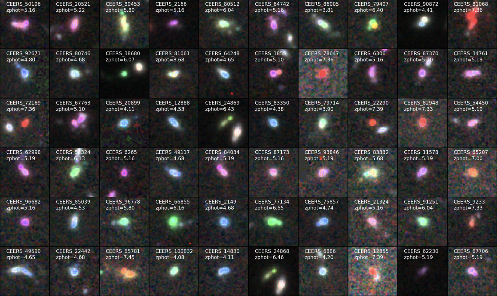
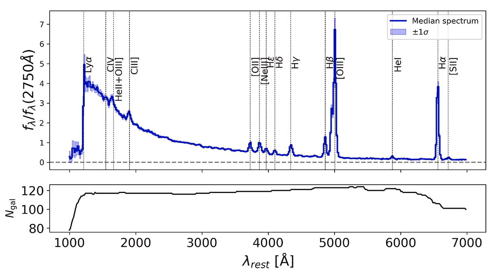

About Me
I am an observational astronomer currently working as a Postdoctoral Researcher at INAF – Osservatorio Astronomico di Roma, where I collaborate with Laura Pentericci and the extragalactic group at OAR.
My research focuses on the formation and evolution of galaxies in the early Universe, with a particular emphasis on the ionizing properties of high-redshift galaxies. I primarily use observations from the James Webb Space Telescope to investigate how the first galaxies shaped the epoch of cosmic reionization.
I was born and raised in Quito, Ecuador, where I studied Physics before moving to Chile to pursue a PhD in Astronomy at Universidad de La Serena under the supervision of Ricardo Amorín.
I am currently an active member of the CEERS, CAPERS, and OCEANS collaborations. I also participate in the MOONRISE collaboration, contributing to the development of source catalogs for the upcoming MOONS instrument at VLT.
Education: PhD in Astronomy: Universidad de La Serena, Chile. Thesis
Research Interests: low-mass galaxies, starbursts, high-z galaxies, cosmic reionization
Publications: ADS link!

Research
Low-mass Starbursts at High Redshift
My research goal is to identify galaxies undergoing extreme star-formation activity in the early Universe using JWST photometric and spectroscopic observations. By combining robust photometric selection techniques with empirical templates of local metal-poor starbursts, I identify promising high-redshift analogs of young star-forming systems. Through detailed SED-fitting analyses, I investigate their physical properties and explore the connection between intense star formation and strong nebular emission.
Paper 2024|Paper 2026
Ionizing Photon Production and Escape in High-Redshift Galaxies
My research goal is to understand the production and escape of ionizing photons in galaxies during the epoch of cosmic reionization. Using large spectroscopic samples from JWST surveys, I investigate how the ionizing photon production efficiency and Lyman continuum escape fraction depend on galaxy properties such as stellar mass, star-formation activity, and nebular emission. In particular, I focus on extreme emission-line galaxies as potential key contributors to the ionizing photon budget of the early Universe.
Paper 2025
Future ground-based spectroscopy
More recently, I have been involved in the validation and optimization of photometric redshifts for future spectroscopic surveys as part of the MOONRISE Collaboration. My work focuses on testing the accuracy of photo-z estimates derived from ground-based imaging by cross-matching MOONRISE catalogs with JWST/NIRCam photometry and available NIRSpec spectroscopy. This effort contributes directly to the optimization of high-redshift target selection for the upcoming VLT/MOONS spectrograph.

Talks/Posters
Here is a compilation of science talks/posters I’ve given. If you’re interested in hearing more about these topics, feel free to reach out to me.
Physical properties of extreme emission-line galaxies at z=4-9 from the JWST CEERS survey - Conference: Cosmic Dawn at High Latitudes (Sweden) Slides
Ionized gas kinematics in UV emission-line galaxies at z=3 - Conference: From galaxies to cosmology with deep spectroscopic surveys (France) Slides
Global properties of CIII]1908 emitting star-forming galaxies at z=3 in the VANDELS survey - IAA-CSIC Severo Ochoa Advanced School on Galaxy Evolution (Spain) Poster
Nebular properties of star-forming CIII]1908 emitters at z=3 - Conference: XIII Estallidos Workshop (Spain, Virtual) Slides
Contact
Email: mario.llerenaona@inaf.it
Address: Rome, Italy